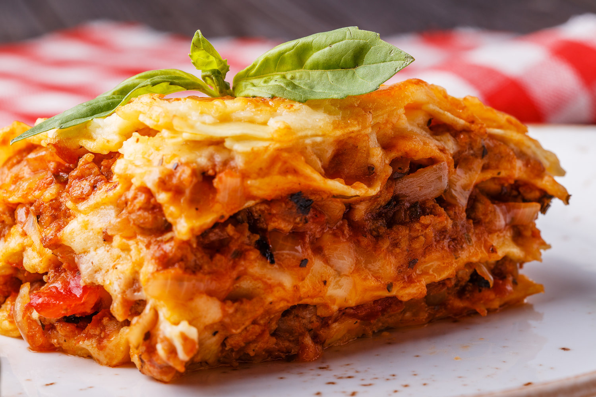

Lasagna

Lasagna Bolognese, Someone Else's Family Recipe
Lasagna Bolognese is a traditional recipe from the Emilia Region, more precisely from Bologna, hence its name. Despite its origin, lasagna is so well known that it’s considered as a symbol of Italian cuisine all over the world. This recipe is the quintessence of the rich Bolognese traditional cuisine both for its preparation and ingredients, and it’s a favorite of adults kids alike.
Ingredients
- Lasagna noodles: 500g
- Parmesan cheese: 200g grated
- Mozzarella cheese: 200g grated
- Ground pork: 250g
- Ground beef: 250g
- Milk: 100g
- Carrots: 2
- Onions: 2
- Celery: 2 stalk
- Wine: 100ml red
- Olive Oil: 4tbsp
- Butter: 50g
- Tomatoes: 500ml
- Salt and pepper: to taste
Directions
Beef Broth Preparation
- Finely chop the onion, the carrot and the celery
- Heat the oil and butter in a saucepan and cook the mirepoix until softened
- Cook on a high flame for a few minutes until browned
- Pour in the red wine and let it evaporate, keeping the heat high
- At this point, add the tomato puree (or the tomato paste dissolved in a small amount of broth), the broth, the pepper and a pinch of salt
- Allow to simmer half-covered for at least 2 hours, stirring occasionally
Lasagna Assembly
- Grease a rectangular baking pan with butter
- Spread a couple of spoonfuls of ragout
- Line the bottom with the noodles
- Coat with plenty of ragout and sprinkle with Parmesan cheese and Mozzarella cheese
- Add another layer of noodles
- Repeat for the second, third, fourth, layers
- Make several layers depending on how deep your baking pan is, or until the ingredients are used up
- Sprinkle with plenty of Parmesan cheese and Mozzarella cheese
- Bake for at least 50-60 minutes (at 320°F/160°C), checking every now and then, until golden brown on top
- Once baked, remove the lasagna from the oven and allow to cool for 10 minutes, then cut into slice and serve hot